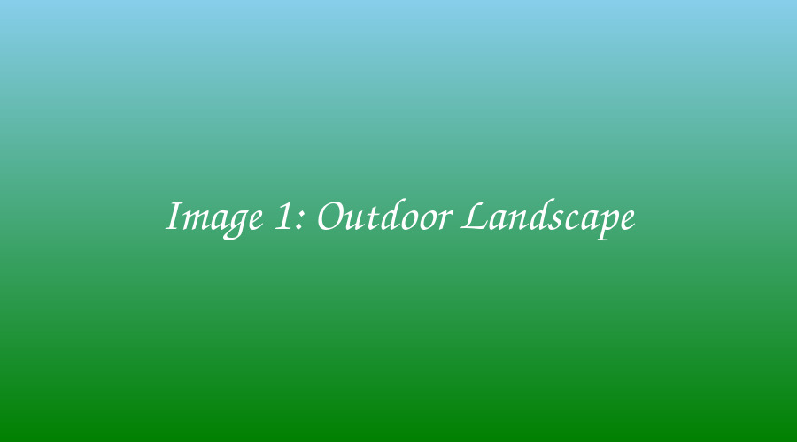
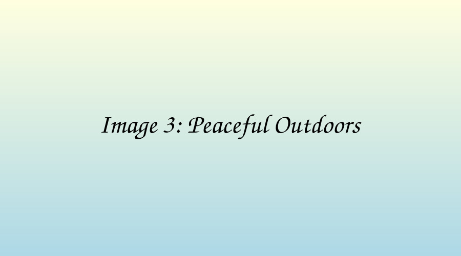

Images
These images demonstrate the use of the HTML <img> element,
descriptive alt text, image dimensions, and figure captions.


Hyperlinks
This section demonstrates different types of HTML hyperlinks.
Internal link: Open this project page
External link: Learn HTML at W3Schools
Multimedia
Audio
Video
The audio and video files used for this activity should each be no more than 2 MB.
HTML DOM
The HTML Document Object Model (DOM) represents the webpage as a tree of elements. Parent elements can contain child elements, creating a structure that can be viewed in the browser's Developer Tools.
DOM example:
- HTML is the root element.
- Body is a child of HTML.
- Main is a child of Body.
- Sections are children of Main.
Open the browser Developer Tools and use the Elements panel to view the nested structure of this page.